| source | target | skill_name | skill_cluster | diffusion | delta_up | delta_down | structural_distance | wage_gap |
|---|---|---|---|---|---|---|---|---|
| 11-1011.00 | 13-1111.00 | Critical Thinking | Socio-cognitive | 1 | 0.0 | 0.3 | 0.35 | -25000 |
| 11-1011.00 | 15-1252.00 | Critical Thinking | Socio-cognitive | 0 | 0.0 | 0.1 | 0.62 | -10000 |
| 27-1021.00 | 49-9071.00 | Manual Dexterity | Socio-technical | 0 | 0.0 | 0.5 | 0.75 | -10000 |
| 49-9071.00 | 51-2092.00 | Manual Dexterity | Socio-technical | 1 | 0.0 | 0.2 | 0.22 | -3000 |
| 13-1111.00 | 11-1011.00 | Active Listening | Socio-cognitive | 0 | 0.3 | 0.0 | 0.35 | 25000 |
| 51-2092.00 | 27-1024.00 | Arm-Hand Steady | Socio-technical | 1 | 0.1 | 0.0 | 0.28 | 15000 |
Asymmetric Trajectory Channeling in Labor Markets:
Macro-Level Evidence for Skills-Based Stratification Reproduction
Roberto Cantillan & Mauricio Bucca
Sociology | Pontificia Universidad Católica de Chile

I. THE PUZZLE
The Puzzle: Labor Market Dynamism vs. Persistent Stratification
Contemporary labor markets exhibit unprecedented dynamism: technological advancements, globalization, and evolving industrial landscapes continually reshape the world of work [@kalleberg2011; @autor2015].
Yet foundational structures of occupational hierarchy and socio-economic stratification exhibit remarkable persistence and adaptive resilience [@tilly1998].
Central Paradox: How does stratification reproduce itself within dynamic change?
The Polarization Phenomenon
Labor markets exhibit skills-based polarization: high-cognitive and low-manual jobs expand while middle-skill jobs decline.
Traditional explanations focus on technological displacement and globalization as external forces.
Missing Piece: How do internal labor market processes actively reproduce this polarized structure?
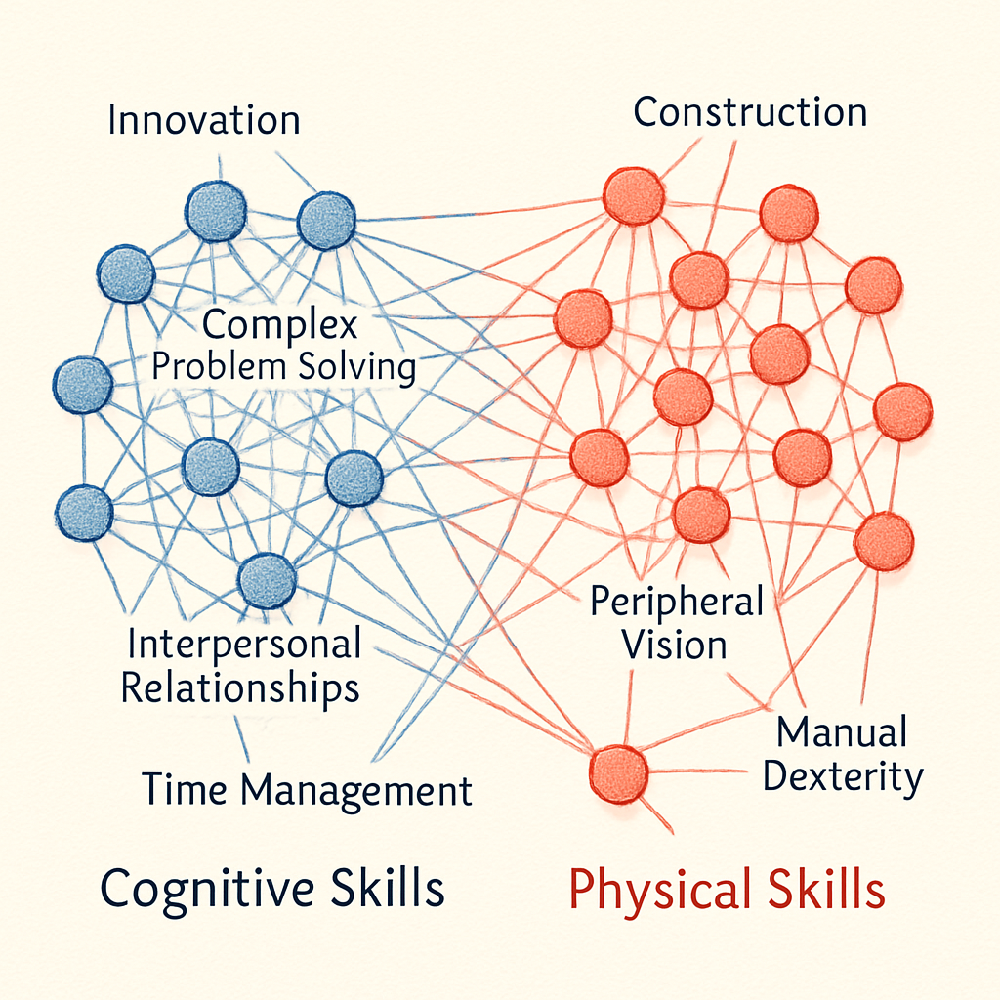
Skills-Based Stratification
Evidence from Alabdulkareem et al. (2018)

Some recent references

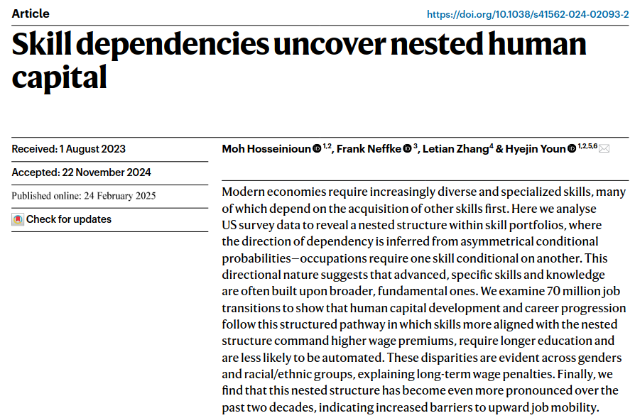
Supply-Side vs. Demand-Side Approaches
Supply-Side Focus
“How do workers adapt to changing skill demands?”
- Individual career decisions
- Human capital investment
- Job search strategies
- Skill acquisition choices
- Focus: Worker adaptation to external changes
Demand-Side Focus (This Study)
“How do organizations systematically reproduce skill requirements?”
- Inter-organizational skill diffusion
- Systematic adoption barriers
- Structural filtering mechanisms
- Focus: How demand-side processes create stratification
Demand-Side Patterns Shape Supply-Side Possibilities
If skill diffusion follows structured patterns → mobility opportunities are structurally predetermined
If different skill types have distinct diffusion logics → career destinies depend on skill type, not just skill possession
Implication: The skill diffusion process itself becomes a stratification engine that sorts workers into persistent hierarchies.
Research Question
Do different skill types exhibit systematic asymmetries in their diffusion patterns across occupational hierarchies that reproduce labor market stratification?
From Static Structure to Dynamic Process
Previous Research: Shows WHAT the structure (e.g., polarization) looks like.
This Research: Reveals HOW boundaries are actively constructed through skill diffusion between organizations.
Central Insight:
Occupational stratification isn’t just maintained—it’s dynamically reproduced through systematically biased skill adoption patterns on the demand side.
II. THEORETICAL FRAMEWORK
Theoretical Background: Organizational Imitation Under Uncertainty
Established Theory: Organizations facing uncertainty about skill requirements look to other organizations for guidance. This imitation is systematically biased by how practices are culturally theorized.
Application to Skills: Different skill types may be culturally interpreted differently:
- Cognitive skills as “portable assets” → aspirational models
- Physical skills as “context-dependent” → proximity-based models
- Cognitive skills as “portable assets” → aspirational models
Our Contribution: Testing whether this produces Asymmetric Trajectory Channeling - systematic macro-patterns in how different skill types diffuse across occupational hierarchies.
The Dual-Process Theory of Skill Diffusion
Cognitive Skills = “Portable Assets”
- Theorized as nested capabilities
- Abstract, broadly applicable
- Associated with growth & adaptability
- Diffusion Logic: Aspirational Emulation
- Pattern: Upward Escalator Effect
Physical Skills = “Context-Dependent”
- Theorized as situational competencies
- Tied to specific material settings
- Less generalizable templates
- Diffusion Logic: Functional Proximity
- Pattern: Lateral Containment Effect
Prediction: These different theorizations create systematically different diffusion trajectories.
Modeling the Empirical Pattern: Piecewise Approach
Expected Pattern: If cultural theorization drives organizational imitation, we should observe systematically different diffusion trajectories for different skill types.
Mathematical Formulation: We model the probability that a skill of type c diffuses from source occupation i to target occupation j:
\[\text{logit}\, P_{i \to j}^{(c)} = \theta_{0c} - \lambda_c d_{ij} - \beta_c^+ \Delta^+_{ij} - \beta_c^- \Delta^-_{ij}\]
Key Innovation - Piecewise Variables:
\(\Delta^+_{ij} = \max(0, s_j - s_i)\) (upward status moves)
\(\Delta^-_{ij} = \max(0, s_i - s_j)\) (downward status moves)
These are orthogonal (\(\Delta^+ \cdot \Delta^- = 0\) always)
Test: Asymmetric channeling = \((\beta_c^+ - \beta_c^-)\) differs systematically by skill type
Empirical Strategy: Testing for Asymmetric Trajectory Channeling
Core Research Question: Do skill types exhibit systematically different diffusion patterns across occupational hierarchies?
Expected Patterns Based on Established Theory:
- Cognitive Skills:
- Should show upward channeling toward high-status occupations
- Expected Pattern: “Escalator Effect” in aggregate data
- Physical Skills:
- Should show more lateral/constrained movement
- Expected Pattern: “Lateral Containment” in aggregate data
- Cognitive Skills:
III. METHODOLOGY
Data and Measurement Strategy
Data Sources:
- O-NET Database (2015-2024): Detailed skill requirements by occupation
- BLS Wage Data (2015-2023): Occupational wage levels
- Education Requirements: Systematic educational level mappings
Level of Analysis: Occupation-to-occupation skill diffusion events
Why Occupations? O*NET captures generalized skill requirements that organizations adapt, and occupations represent institutionalized roles with established skill expectations.
Constructing the Skill Diffusion Dataset
Step 1: Revealed Comparative Advantage (RCA)
- Calculate skill specialization: \(\text{RCA}(j,s) > 1\) = occupation \(j\) “effectively uses” skill \(s\)
Step 2: Skill Clustering
- Build skill complementarity networks → Leiden algorithm
- Result: 2 main clusters consistent with theory
Step 3: Diffusion Events Construction
- Positive Event (diffusion = 1): Target adopts skill (2024) that source had (2015)
- Negative Event (diffusion = 0): Target does NOT adopt by 2024
- Generate all possible source-target-skill combinations
Step 4: Distance Variables
- Educational Gap: \(s_j - s_i\) (target education - source education)
- Wage Gap: Target wage - source wage
- Structural Distance: Jaccard similarity of complete skill profiles (in 2015)
- Educational Gap: \(s_j - s_i\) (target education - source education)
Final Dataset Structure
Final Dataset: ~1.5M skill-occupation dyadic events with piecewise status variables
Model Specification
- Piecewise Logistic Regression:
\[\text{logit}\, P_{i \to j}^{(c)} = \theta_{0c} - \lambda_c d_{ij} - \beta_c^+ \Delta^+_{ij} - \beta_c^- \Delta^-_{ij} - \omega_c w_{ij}\]
- Estimated Separately by Skill Type:
- Cognitive Model: Socio-cognitive skills only
- Physical Model: Socio-technical skills only
- Key Parameters:
- \(\beta_c^+\): Effect of upward status moves (Δ⁺ > 0)
- \(\beta_c^-\): Effect of downward status moves (Δ⁻ > 0)
- Asymmetry: \((\beta_c^+ - \beta_c^-)\) measures directional bias
- Advanced Extensions:
- Bayesian models with shrinkage priors for curvature detection
- Fixed effects models for causal identification
IV. RESULTS
Distance Sensitivity by Skill Type
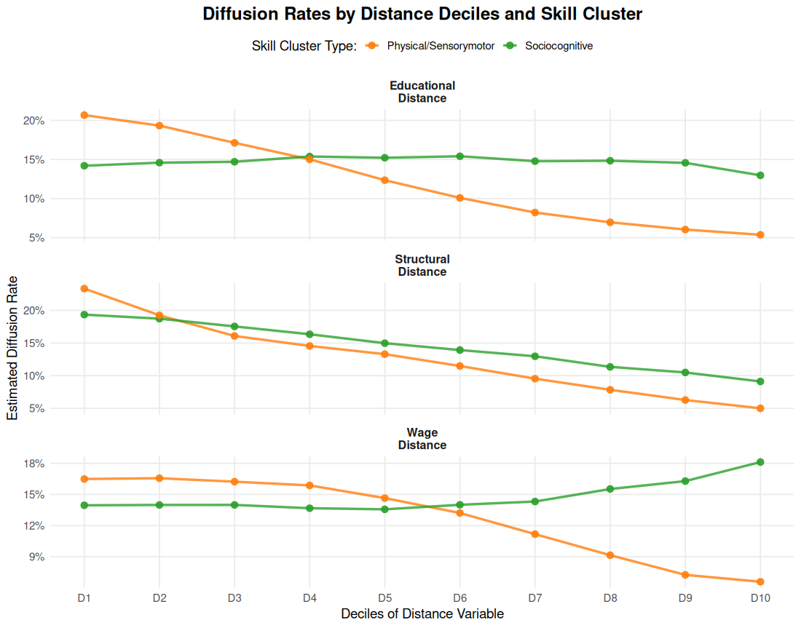
Distance Sensitivity by Skill Type
Key Patterns:
Socio-cognitive Skills (green): Maintain diffusion rates across distances, showing resilience to barriers
Socio-technical Skills (Orange): Show sensitivity to distance constraints with declining rates
-Interpretation: Cognitive skills navigate structural barriers more effectively than physical skills
Matrix Evidence: Educational Channeling
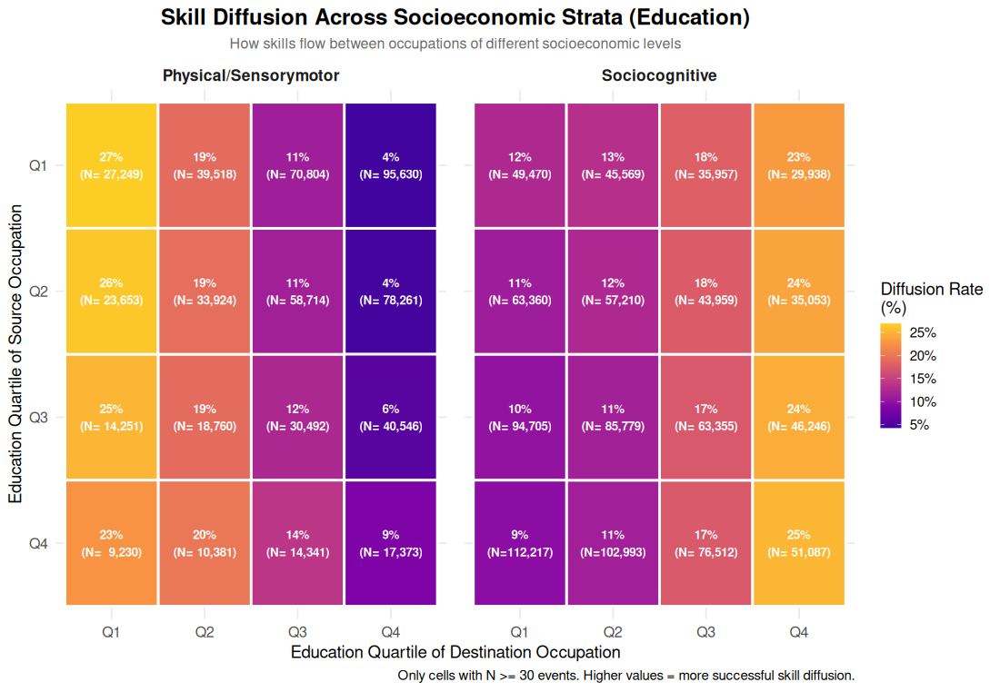
Matrix Evidence: Economic Channeling
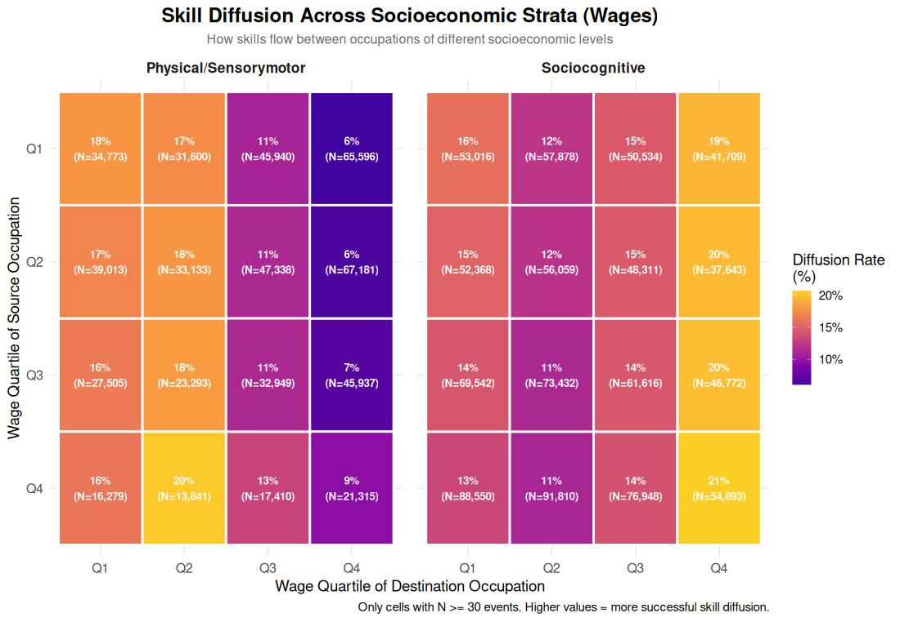
Descriptive Summary
Clear Asymmetric Patterns:
Socio-cognitive skills exhibit strong upward channeling, flowing predominantly toward high-education, high-wage occupations (Q4) regardless of origin
Socio-technical skills show lateral containment, circulating mainly within lower quartiles (Q1-Q3) with limited access to Q4
“Glass Ceiling” Effect: Physical skills face systematic barriers to entering high-status occupations
Next: Do these patterns hold when controlling for confounders?
Piecewise Model Results
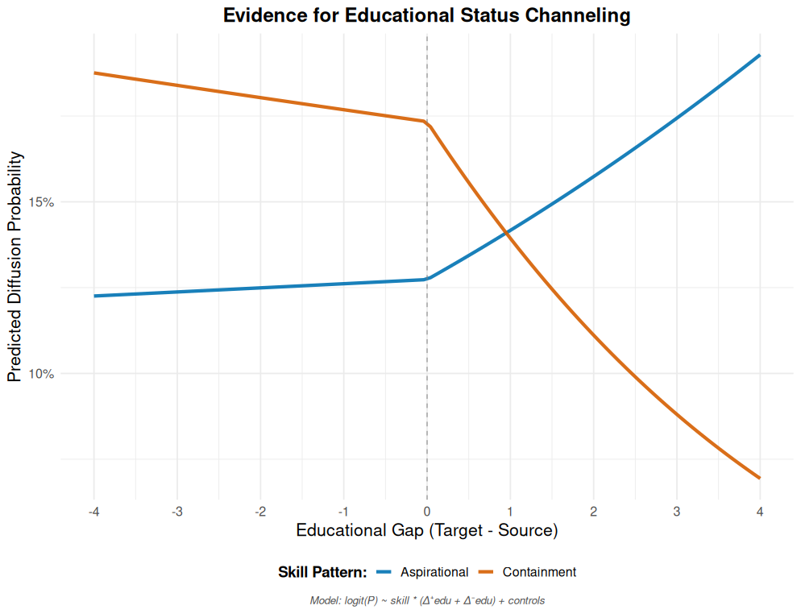
Piecewise Model Results II
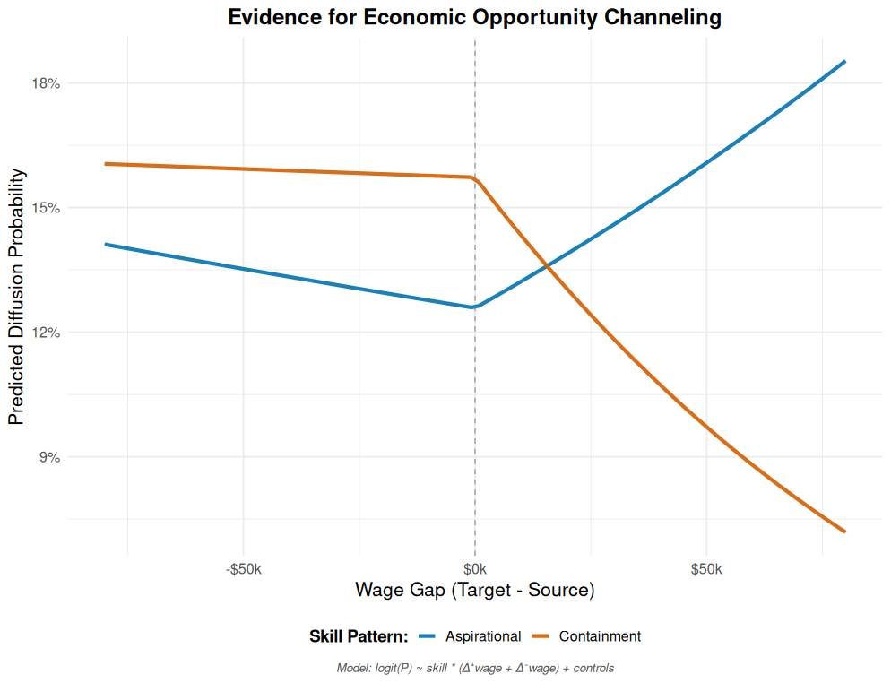
Model Interpretation: Confirmed Asymmetric Channeling
- Socio-cognitive Skills (Blue Line) = “The Escalator”:
- Sharp upward trajectory for positive status gaps (β⁺ = +0.444)
- Strong downward penalty for negative gaps (β⁻ = -0.258)
- Large Asymmetry: (β⁺ - β⁻) = 0.702
- Pattern: Strong aspirational pull toward higher-status occupations
- Socio-technical Skills (Orange Line) = “Lateral Containment”:
- Minimal upward facilitation (β⁺ = -0.122)
- Moderate downward penalty (β⁻ = -0.225)
- Small Asymmetry: (β⁺ - β⁻) = 0.103
- Pattern: Largely neutral/constrained mobility
- Minimal upward facilitation (β⁺ = -0.122)
Statistical Evidence: Piecewise specification eliminates multicollinearity while providing clean directional tests
Causal Evidence
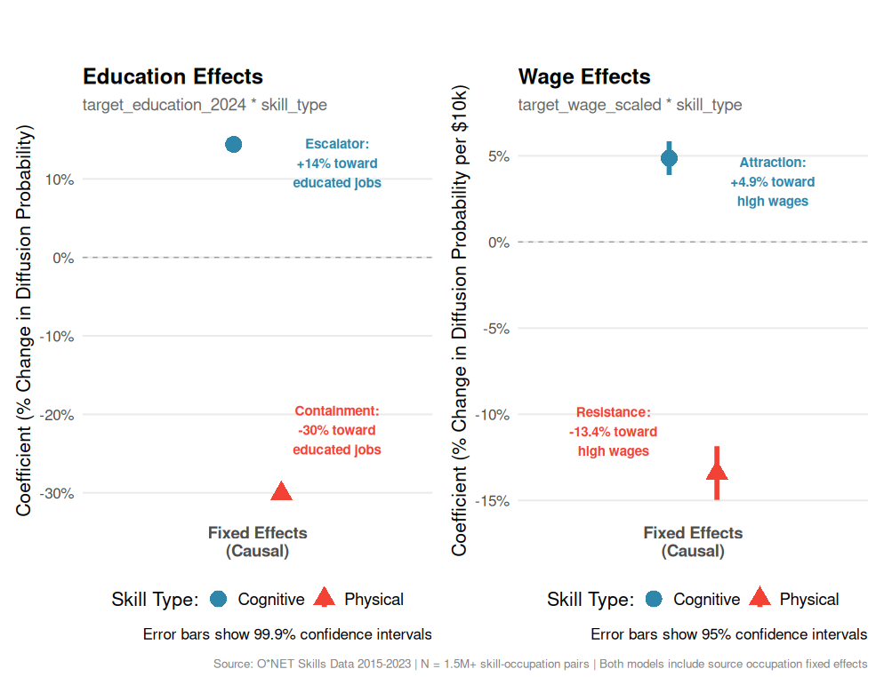
Causal Evidence: Fixed Effects Models
Causal Robustness: Fixed effects models confirm asymmetric trajectory channeling persists even when controlling for unobserved occupation-level heterogeneity
Dual Escalator Effect: Cognitive skills show positive attraction toward both high-education (+14%) AND high-wage (+4.9%) occupations
Dual Containment Effect: Physical skills exhibit systematic resistance to both educational (-30%) and economic (-13.4%) upward mobility
Consistent Asymmetric Patterns: Both education and wage dimensions show identical directional patterns - cognitive skills “escalate,” physical skills get “contained”
V. PRELIMINARY EVIDENCE (WORK IN PROGRESS)
From Channeling to Revaluation
Our core finding, Asymmetric Trajectory Channeling, is not a neutral sorting process. It has profound economic consequences that actively reproduce stratification.
We argue this occurs through a Value Displacement Mechanism, where the economic return of a skill or strategy is no longer intrinsic, but becomes conditional on the status of the actor adopting it.
As a preliminary test, we analyze the wage growth outcomes of an innovative strategy: the high-propensity adoption of cognitive skills.
Evidence 1: A Conditional Return to Status
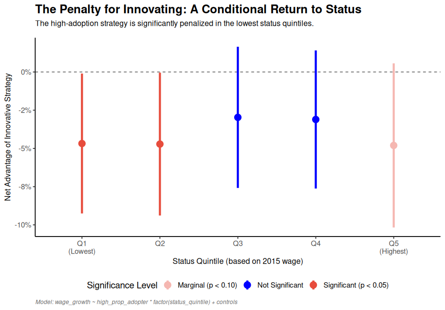
This first plot establishes the phenomenon. It shows the net advantage of the innovative strategy, conditioned by occupational status.
The result is clear: for the two lowest status quintiles, the strategy carries a statistically significant penalty.
This penalty disappears as status increases. This is a classic pattern of Cumulative Advantage: an occupation’s initial status grants it the “luxury” of innovating without the economic cost paid by others.
Evidence 2: The Penalty for ‘Fashion-Driven’ Innovation
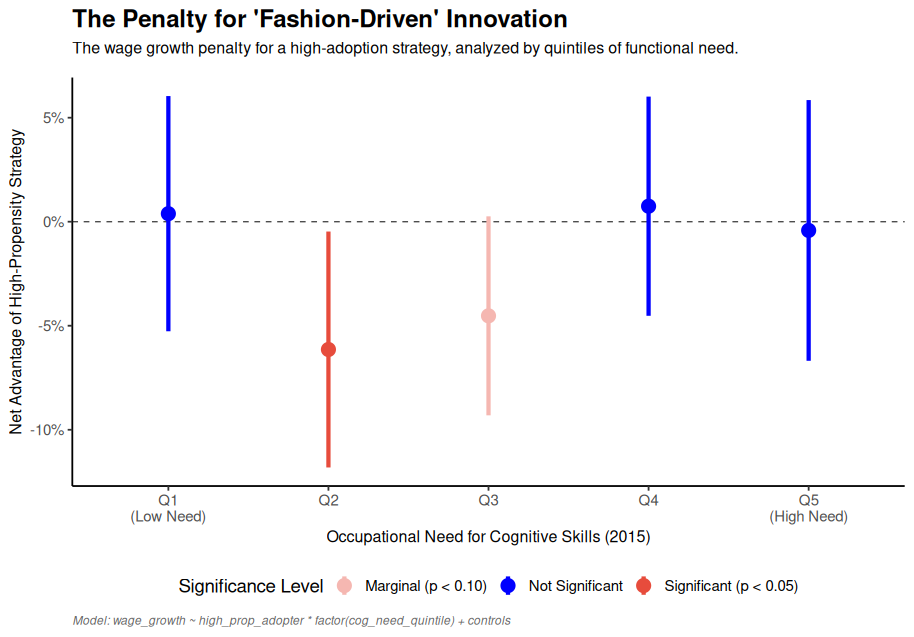
This second plot is a more direct and powerful test. It replaces “status” with a measure of “functional need”.
The results are even more striking. The penalty is statistically significant precisely for occupations that functionally needed these skills the least (Quintile 2).
This supports our theory: the market discerns and penalizes “fashion-driven” adoptions, displacing the value from the skill itself to the functional context of the adopter.
VI. DISCUSSION
Key Findings
Strong Evidence for Asymmetric Trajectory Channeling:
✅ Cognitive Skills: Pronounced escalator dynamics (Asymmetry = 0.702)
- Systematic upward channeling toward high-status occupations
✅ Physical Skills: Containment/lateral mobility (Asymmetry = 0.103)
- Limited cross-hierarchical movement, proximity-constrained diffusion
✅ Systematic Differences: Robust channeling effects across skill types
- Patterns consistent with established organizational imitation theory
✅ Provisional Evidence for a Value Displacement Mechanism:
- The returns to an innovative strategy are conditional on both status and functional need.
VII. IMPLICATIONS & FUTURE DIRECTIONS
Implications & Future Directions
Strengthening Causal Inference:
- Technology shocks as exogenous skill demand shifters
- Geographic variation in occupational structures as instruments
- Longitudinal worker data (NLSY, PSID) for validation
Agent-Based Modeling Extensions:
- Emergent Polarization: How individual filtering decisions create system-level patterns
- Boundary Dynamics: Dynamic construction/reconstruction of occupational boundaries
- Policy Counterfactuals: Testing interventions that modify cultural theorization
International Comparative Analysis:
- Cross-national variation in skill theorization
- Institutional differences in organizational imitation patterns
VIII. CONCLUSION
Summary
Key Insight: Labor market stratification is actively reproduced through the systematic Asymmetric Trajectory Channeling of different skill types.
Core Finding: Cognitive and physical skills follow systematically different diffusion pathways across occupational hierarchies, creating a biased distribution of opportunities.
Main Implication: This channeling has profound economic consequences, giving rise to a Value Displacement Mechanism where the returns to innovation are gated by an occupation’s pre-existing status and functional profile.
Theoretical Context: Our findings are consistent with established theories of organizational imitation and provide a demand-side explanation for the persistence of inequality.
Thank you!
Roberto Cantillan (rcantillan@uc.cl)
Mauricio Bucca (mbucca@uc.cl)
Department of Sociology
Pontificia Universidad Católica de Chile
APPENDIX I
From Established Theory to Testable Macro-Pattern
Background Theory (Established):
- Organizations imitate skill requirements under uncertainty [@strang1993]
- Imitation is filtered by how practices are culturally theorized [@hedstrom1998]
- Different skill types may trigger different imitation logics
Our Theoretical Application:
- Cognitive skills may be seen as “portable assets” → aspirational models
- Physical skills may be seen as “context-dependent” → proximity models
Testable Prediction:
- Asymmetric Trajectory Channeling across occupational hierarchies
- Systematic reproduction of skills-based stratification patterns
- Distinct diffusion pathways for different skill types
Theoretical Contributions
1. Asymmetric Trajectory Channeling Concept:
- First systematic identification and measurement of this macro-pattern
- Shows how skill types sort into systematically different diffusion pathways
2. Skills-Based Stratification Framework:
- Demonstrates how demand-side processes actively reproduce occupational hierarchies
- Moves beyond describing polarization to modeling its reproduction mechanisms
3. Methodological Innovation:
- Piecewise models for testing asymmetric diffusion in macro-data
- Dyadic approach to analyzing aggregate inter-organizational skill patterns
4. Empirical Evidence:
- First comprehensive evidence for systematic skill channeling effects
- Robust patterns across 1.5M dyadic diffusion events (2015-2024)
APPENDIX II
Occupational Skill Space: Technical Details
Revealed Comparative Advantage (RCA):
\[\text{RCA}(j,s) = \frac{\text{onet}(j,s) / \sum_{s' \in S} \text{onet}(j,s')}{\sum_{j' \in J} \text{onet}(j',s) / \sum_{j' \in J, s'' \in S} \text{onet}(j',s'')}\]
Interpretation:
- Numerator: Skill \(s\)’s share of occupation \(j\)’s total skill requirements
- Denominator: Skill \(s\)’s share of economy-wide skill requirements
- RCA > 1: Occupation has comparative advantage in skill (effective use)
Skill Complementarity Network (Leiden Algorithm → 2 Main Clusters):
\[\theta(s,s') = \frac{\sum_{j \in J} e(j,s) \cdot e(j,s')}{\max\left(\sum_{j \in J} e(j,s), \sum_{j \in J} e(j,s')\right)}\]
Diffusion Event Construction: Formal Logic
Positive Diffusion Events (diffusion = 1):
- Sources: \(S_s = \{j : \text{RCA}_{2015}(j,s) > 1\}\)
- End Adopters: \(A_s = \{j : \text{RCA}_{2024}(j,s) > 1\}\)
- New Adopters: \(N_s = A_s \setminus S_s\)
- Positive Events: \(\{(i,j,s) : i \in S_s, j \in N_s, i \neq j\}\)
Negative Diffusion Events (diffusion = 0):
- Non-Adopters: \(\bar{A_s} = J \setminus A_s\) (all occupations not using skill in 2024)
- Negative Events: \(\{(i,j,s) : i \in S_s, j \in \bar{A_s}, i \neq j\}\)
Result: Exhaustive dyadic dataset of all possible diffusion opportunities
Piecewise Model: Mathematical Properties
Standard Approach Problems:
- Using \((s_j - s_i)\) and \(|s_j - s_i|\) creates perfect multicollinearity
- Asymmetry testing requires complex coefficient combinations
Our Piecewise Solution: \[\Delta^+_{ij} = \max(0, s_j - s_i), \quad \Delta^-_{ij} = \max(0, s_i - s_j)\]
Key Properties:
- Orthogonal: \(\Delta^+_{ij} \cdot \Delta^-_{ij} = 0\) always
- Exhaustive: \(\Delta^+_{ij} + \Delta^-_{ij} = |s_j - s_i|\)
- Direct Asymmetry: \((\beta^+ - \beta^-)\) tests directional bias directly
- Clear Interpretation: Each parameter has unambiguous meaning
Extensions: Quadratic terms with Laplace priors for curvature detection
APPENDIX III
Robustness Strategy: Discarding Alternative Explanations
Central Question: Economic Adaptation vs. Cultural Theorization?
H0: Economic Adaptation Hypothesis
- Skills diffuse based on functional economic value
- Higher education/wage skills naturally flow upward
- All cognitive skills should behave uniformly (equal “value”)
H1: Cultural Theorization Hypothesis
- Skills diffuse through organizational imitation under uncertainty
- Imitation biased by cultural interpretation of skill types
- Cognitive skills as “portable assets” → aspirational models
- Physical skills as “context-dependent” → proximity models
Three-Test Strategy:
TEST 1: Skill Specificity
- Logic: Economic adaptation predicts uniform cognitive behavior
- Method: Heterogeneity analysis within cognitive skill types
TEST 2: Industry Controls
- Logic: Do controls eliminate or reveal channeling effects?
- Method: 4-digit NAICS fixed effects models
TEST 3: Theoretical Direction
- Logic: Do patterns match organizational imitation predictions?
- Method: Direct testing of theoretical criteria
TEST 1 - Skill Specificity Analysis
Economic vs. Cultural Theorization Test
Cognitive Skills Range: 0.178
- Interpersonal Cognitive: +0.25
- Specialized Cognitive: +0.20
- Universal Cognitive: +0.07
- Range exceeds 0.10 threshold ✅
Technical Skills Range: 0.15
- Sensory: -0.15
- Technical: -0.18
- Physical: -0.22
- More uniform containment pattern
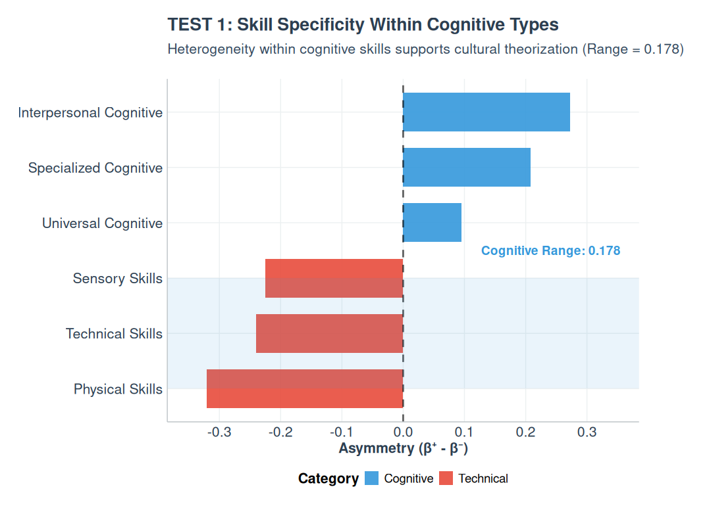
TEST 2 - Industry Controls Reveal TRUE Channeling
Industry Fixed Effects Analysis
Base Model (Mixed Effects):
- General asymmetry: -0.0174
- Averaged across industries
Industry Controls Model:
- Cognitive Escalation: +0.1114
- Technical Containment: -0.2636
- Difference Magnitude: 0.375
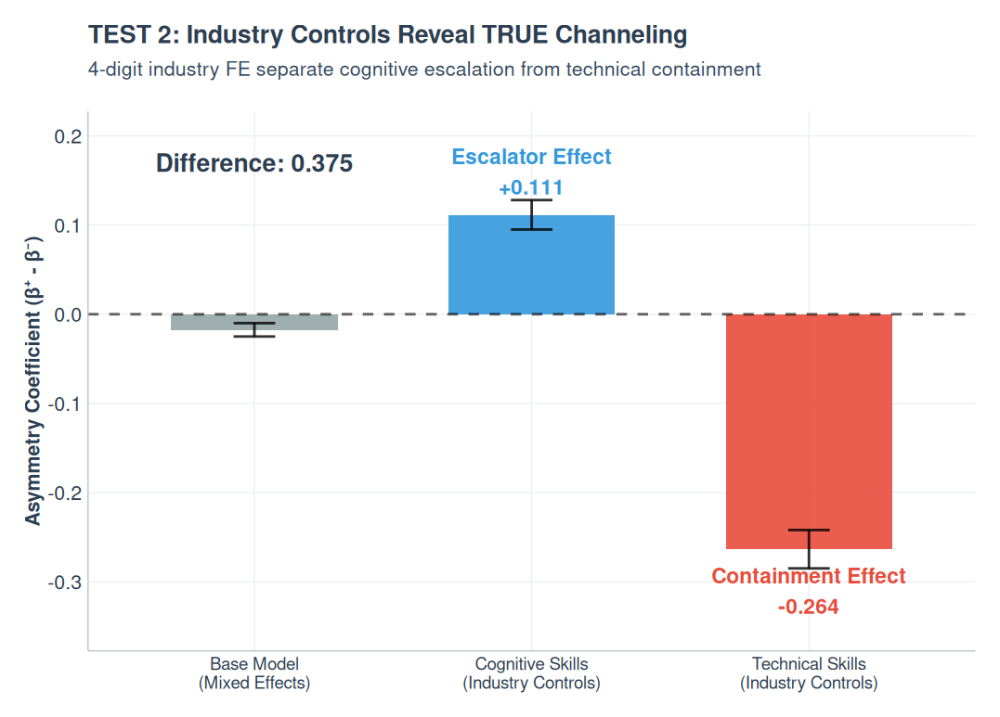
TEST 3 - Theoretical Direction Confirmed
Organizational Imitation Theory Validation
- Criterion 1: Cognitive Upward Bias
- Theoretical prediction: Cognitive skills should show upward channeling
- Observed: +0.111 (cognitive) > 0.05 threshold ✅
- Magnitude: Strong evidence for cognitive escalation
- Criterion 2: Pattern Consistency
- Theoretical prediction: Cognitive > Technical
- Observed: +0.111 (cognitive) > -0.264 (technical) ✅
- Magnitude: 0.375 difference
- Criterion 3: Technical Below Cognitive
- Theoretical prediction: Technical skills should show containment
- Observed: -0.264 < 0.111 ✅
- Magnitude: Confirmed technical containment
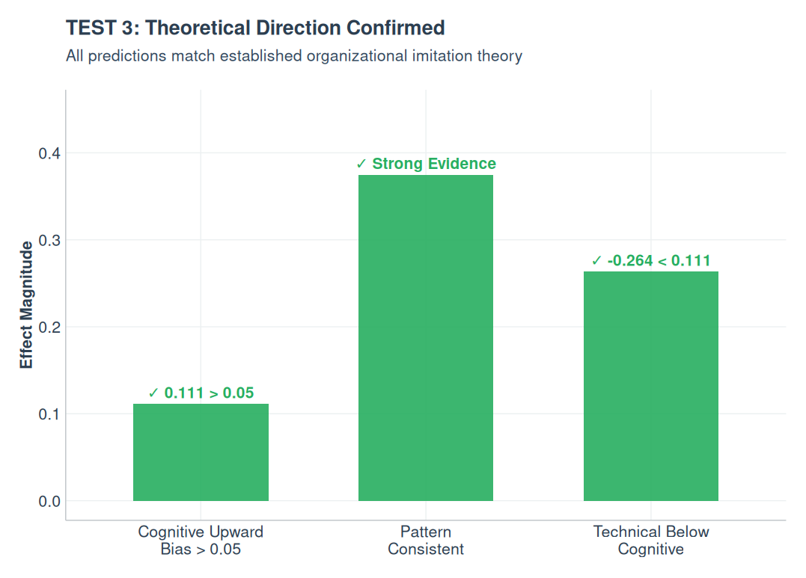
Cantillan & Bucca | Asymmetric Trajectory Channeling in Labor Markets | IC2S2 Norrköping | 2025